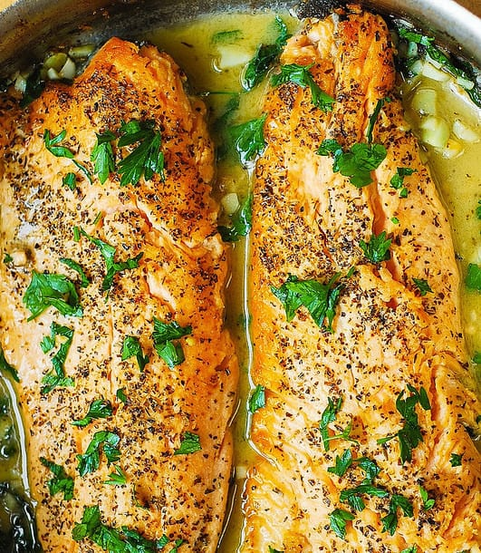

Trout

Description
This recipe works for any variation of trout(rainbow trout,lake trout, etc.)
Ingredients
- Trout Fillet
- Salt
- Pepper
- Lemon
- Vegetable oil
- Butter
Steps
- Season trout with seasonings listed above and let sit for at least 10 min
- Heat up pan to medium heat
- Pour vegetable oil and butter on pan and move pan around till they are mixed together
- Place trout on pan and let cook until you see edges start to whiten
Back to Main